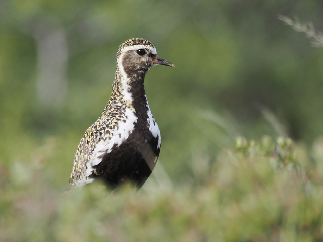
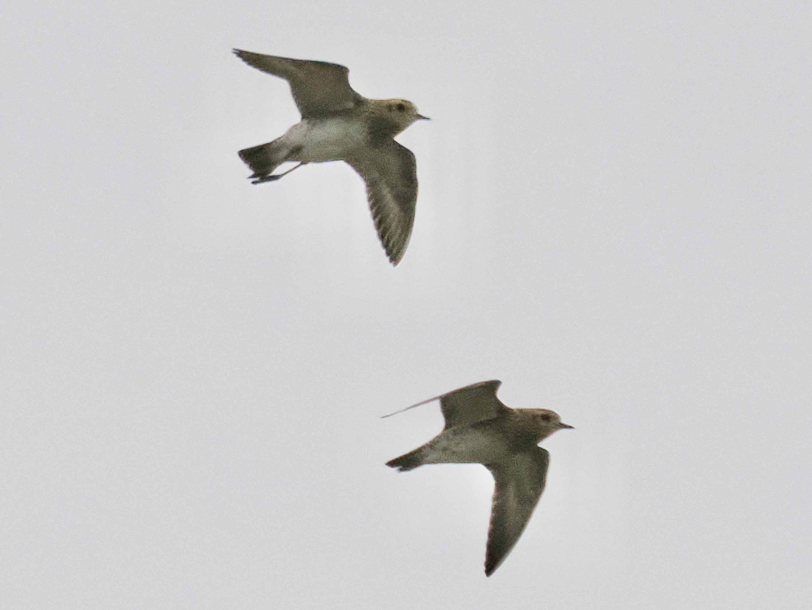

European Golden-Plover
Pluvialis apricaria
Order: Charadriiformes
Family: Charadriidae

Large golden plover. In breeding plumage has a black belly, separated from the golden checkerboard back by a white stripe.

Non-breeding birds are brownish with dark ear coverts.